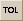

When a tolerance data file (*.inx) is displayed in the ASAP Editor window, the Tolerance Parameter Limits dialog is available on the View menu, or by clicking  on the Editor toolbar.
| Parameter Name | Select a parameter from the drop-down menu: Radius, Center thickness (location), Diameter, Decenter, Wedge, Irregularity, Element tilt, Element decenter, Conic, Aspherics, and Index. |
| Lower Limit (Minus) | Enter the value for the lower (minus) limit of the tolerance range. |
| Upper Limit (Plus) | Enter the value for the upper (plus) limit of the tolerance range. |
| Units % | Shows the default unit for the selected parameter name, if a default exists. This field cannot be changed. |
| Cancel | Discards the changes and closes the dialog box. |
| Reset | Restores the tolerance parameter values to their original setting. |